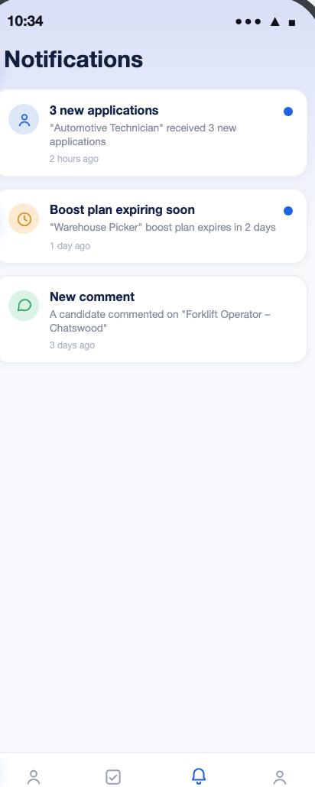
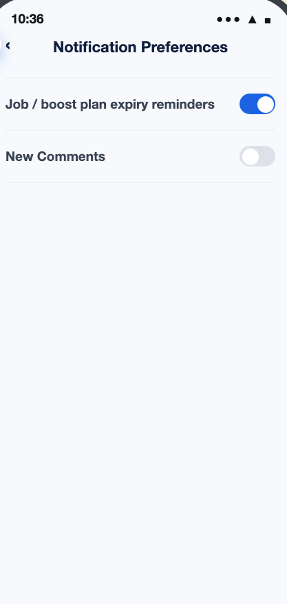

3.8Notifications — What Reaches You, and How to Turn It Off
Notifications tab

NOT LIVE YET
My › Settings

1New applications
Built, but not sending yet — the card sits in the list greyed out.
2Boost plan expiring soon
A job’s boost plan is about to run out. Tap it and you land on your Orders list under My.
3New comment
A candidate commented on one of your jobs. Tap it to open your company page.
4Job / boost plan expiry reminders
The switch for 2.
5New Comments
The switch for 3. Each type turns on or off on its own, and the list itself has no switches.
3.8